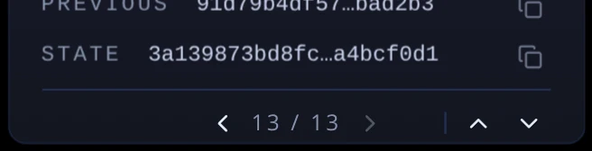
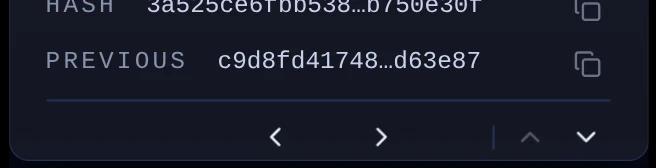
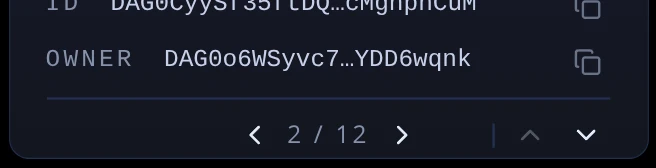

The strip does two jobs. The left and right arrows step to the next card of the same kind (the next snapshot, the next network). The up and down arrows open the card above or below in the pile. Today that is four arrows, a slash and a divider in one row. Three ways to calm it down; each is drawn for a card that knows its position ("13 of 13"), for the global snapshot (which has no total), and for a card in the middle ("2 of 12"). Pick a letter. Nothing here is built.



The slash becomes the word "of" and the count drops its capitals. The divider goes: the up and down arrows are drawn smaller and quieter instead, so they read as a second, lesser control without a line between them.
One small square per card, the current one lit — the same squares the cards already use to count nodes and snapshots. No digits and no slash. A set too long for squares (more than about fifteen) falls back to A's "37 of 213". The up and down arrows are as in A.
The up and down arrows leave the strip. Going up is a click on the card above, which already works. Going down becomes a row in the card that says where it leads, like "Decompress this snapshot" does. The strip is two arrows and a count.